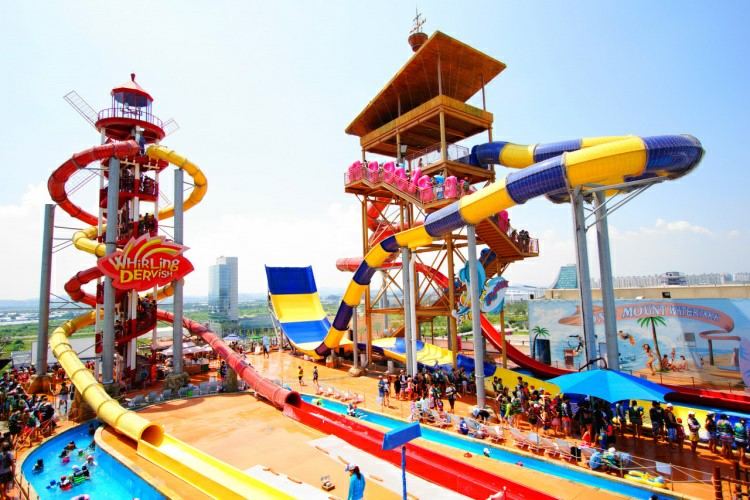
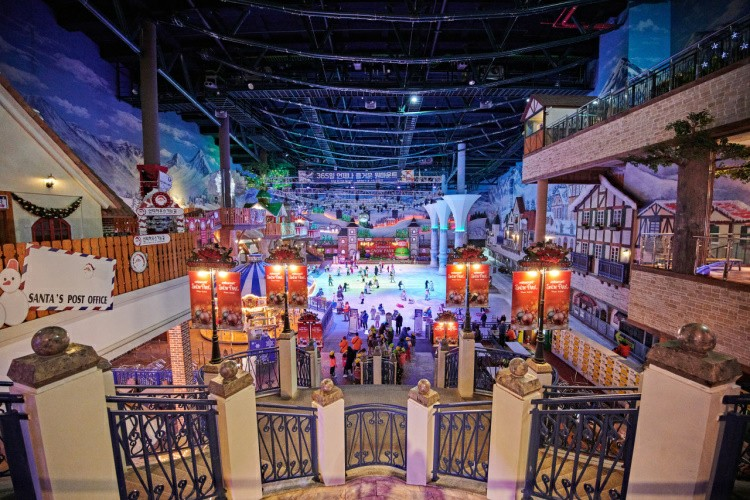
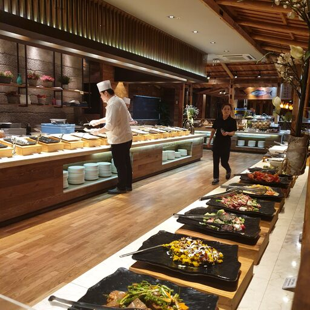
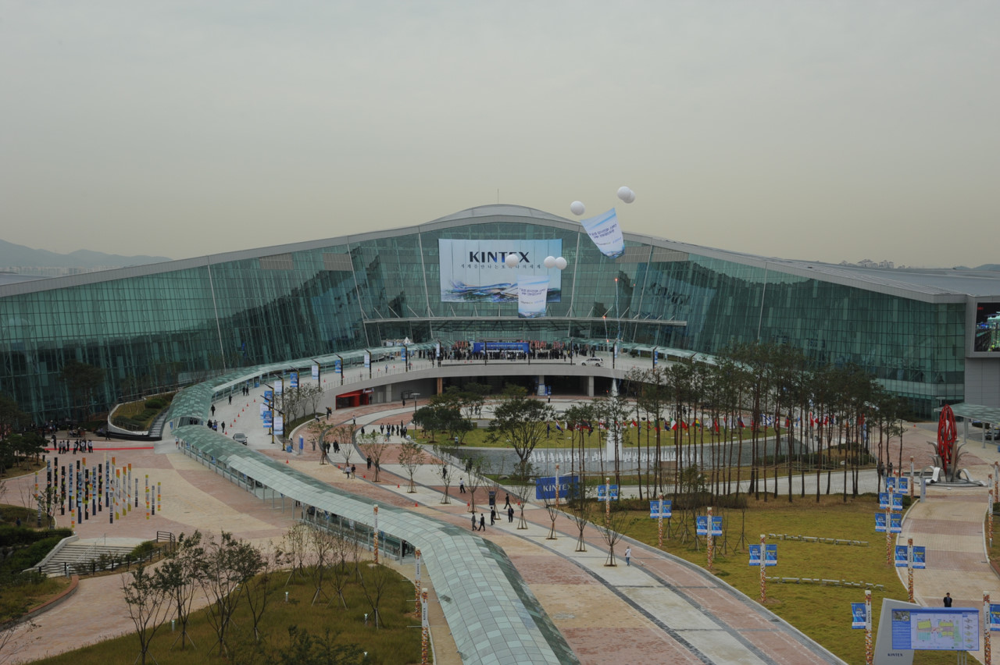

원마운트
원마운트에는 워터파크와 스노우파크가 있으며 쇼핑몰도 있습니다
 워터파크는 실내외를 넘나드는 짜릿한 워터 슬라이드와 파도 풀이 있으며 가족, 연인, 친구와 함께 즐기는 다양한 놀이가 가득한 곳입니다. 사계절 즐길 수 있으며 도심 최대 규모의 워터파크 입니다. 케러비안 베이와 같은 곳보다는 작지만 슬라이드가 3대가 있으며 복층으로 이루어져 있어 즐기기에 매우 좋습니다. 스노우파크는 여름에도 눈을 즐길 수가 있으며 눈과 관련된 세계 최초의 테마파크 입니다. 회전목마, 사계절 눈이 있는 스노우힐, 아이스링크, 눈썰매장이 있으며, 개썰매가 인기가 많으며 겨울시즌에는 아이스쇼를 관람할 수 있습니다.
웨스턴돔과 같이 쇼핑몰들이 스트릿 형태로 이루어져 있으며 주로 SPA 매장과 프렌차이즈 매장이 있습니다.
지하철 3호선 주엽역에서 걸어서 10분거리에 위치해 있습니다.
바르미 스시뷔페
원마운트 안에 있는 일산 원마운트 맛집으로 유명한 스시 뷔페입니다. 가게 내부는 전체가 나무로 이루어져 있어 자연친화적이며 깔끔한 분위기입니다. 넓은 좌석과 룸이 구비되어 있어 단체로 오기에도 좋은 곳입니다. 싱싱한 생선회와 초밥, 다코야키, 연어샐러드, 훈제오리구이, 샐러드 등 매우 다양한 종류의 요리들이 준비되어 있습니다. 합리적인 가격으로 우수한 품질의 스시 및 샐러드 등 다양하게 뷔페를 이용할 수 있습니다.
*주소 : 경기 고양시 일산서구 한류월드로 300 원마운트킨텍스
킨텍스는 국내 최대, 아시아 4번째 전시면적을 기반으로 국제 전시, 컨벤션을 유치, 운영함으로써 대한민국 전시 사업을 대표하고 있습니다. 국제수준 전시면적 확보로 세계적 전시회로 발돋움할 수 있는 전환점을 마련하였다. 국내 최초 10만m²전시회인 ‘2011 한국산업대전’의 성공적 개최를 시작으로 국내 주요 전시회들의 대형화에 앞장서고 있습니다. 또한, e-sports 대회, 미스터트롯 등의 콘서트가 킨텍스에서 개최되고 있습니다. 주요 시설은 크게 제 1전시장, 제 2전시장이 있습니다. 제1전시장은 지하1층부터 지상2층으로 이루어져 있으며, 제 2전시장은 지하1층에서 지상 15층까지 이루어져 있습니다.
*주소 : 경기 고양시 일산서구 킨텍스로 217-60